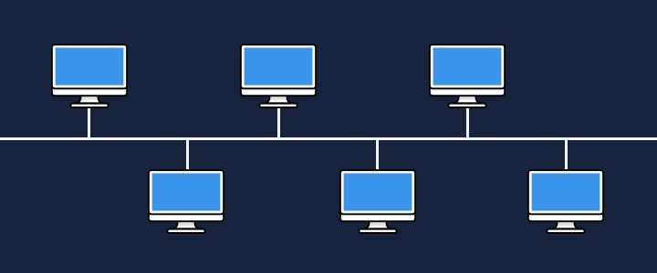

Conheça as Principais Topologias de Rede
Topologia em Estrela
Na topologia em estrela, todos os dispositivos estão conectados a um único ponto central...
Topologia em Anel
Na topologia em anel, cada dispositivo está conectado a outros dois, formando um circuito fechado...

Topologia em Barramento
Na topologia em barramento, todos os dispositivos estão conectados ao mesmo meio de comunicação...

Topologia em Árvore
A topologia em árvore é uma combinação de várias topologias estrela conectadas em uma estrutura hierárquica. Isso facilita a expansão da rede, mas a falha de um segmento pode afetar os nós abaixo dele.
Topologia em Malha
Na topologia em malha, cada dispositivo está conectado a vários outros, criando diversos caminhos para os dados. Isso aumenta a confiabilidade, mas é mais caro e complexo de implementar.